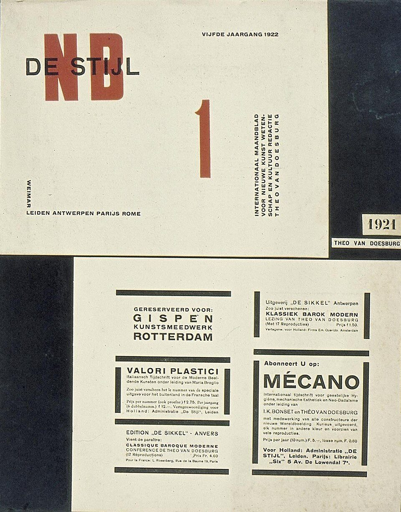

References / Editorial / 155
De Stijl journal cover and advertisement page, 1922
Van Doesburg’s typography for the journal: DE STIJL in black capitals over a large red NB, and an advertisement page in which thick black bars frame each notice.
- Source
- Geheugen van Nederland: Typografie voor De Stijl, omslag en een paar advertenties
- Creator
- Theo van Doesburg
- Made
- 1920–1922 (the cover shown is for the fifth volume, 1922)
- Style
- De Stijl (agent-proposed, not yet reviewed by a person)
- Moods
- Typographic, orthogonal, austere
- Evidence
- Inspected the Commons copy (1200 × 1533 px, viewed at 960 px) of the Geheugen van Nederland image of a mounted sheet, 41 × 32.5 cm, in the Centraal Museum Utrecht on loan from the Dutch State (inventory AB4945 in the file name). Also compared the Commons scan of the 1921 cover from the 1968 facsimile reprint (File:De Stijl - vierde jaargang 1921 001.jpg).
- Reviewed
- Rights
- Open license, stored. License: public domain. Rights policy

Context
Commons records the object as “Typografie voor De Stijl, omslag en een paar advertenties” (typography for De Stijl, cover and some advertisements), printed matter, 1920–1922, 41 × 32.5 cm, Centraal Museum Utrecht, on loan from the Dutch State. Commons.

The same cover layout, with “VIERDE JAARGANG 1921”, opens the fourth volume. Commons credits that cover to Theo van Doesburg and Piet Mondrian. Commons.
Van Doesburg edited the journal from 1917 until his death in 1931. Wikipedia: De Stijl.
Observed
- The cover shows “DE STIJL” in black geometric sans-serif capitals printed over two tall red letters, “N” and “B”.
- “VIJFDE JAARGANG 1922” sits at top right; a tall red numeral “1” stands in the middle.
- A block of letter-spaced capitals, “INTERNATIONAAL MAANDBLAD VOOR NIEUWE KUNST WETENSCHAP EN KULTUUR REDACTIE THEO VAN DOESBURG”, runs vertically at the right.
- “WEIMAR” runs vertically at the lower left above the line “LEIDEN ANTWERPEN PARIJS ROME”.
- The advertisement page is divided into boxes by thick black bars: horizontal bars above and below some notices and vertical bars at the sides of others. The notices advertise Gispen, Valori Plastici, De Sikkel, and Mécano.
- The sheets are mounted on a dark blue-black ground with the label “1921 / THEO VAN DOESBURG”.
Why it belongs
The red NB probably abbreviates Nieuwe Beelding, the Dutch name for neoplasticism (not checked against a source). The cover sets the movement’s program as a letter block under the title.
The advertisement page shows the painted grid translated into print: black bars do the work of rules and borders, and they stop short of each other instead of closing the boxes.
Borrow
Set a short title in black capitals over one oversized letter in a primary.
Frame content blocks with thick black bars on only two sides, and let the bars stop short of each other.
Turn a secondary text block 90° and set it in letter-spaced capitals.
Measured
Machine-extracted by tools/image-traits.py on . Full measurement.
- Mean chroma
- 0.08
- Palette
- #eae7d4 55%
- #25272d 14%
- #dfdbc8 11%
- #3a3c38 3%
- #d4ceba 3%
- #9f5642 2%
- #191b21 2%
- #4c4c43 2%

